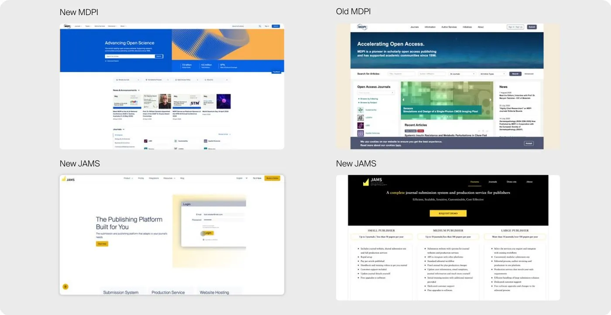
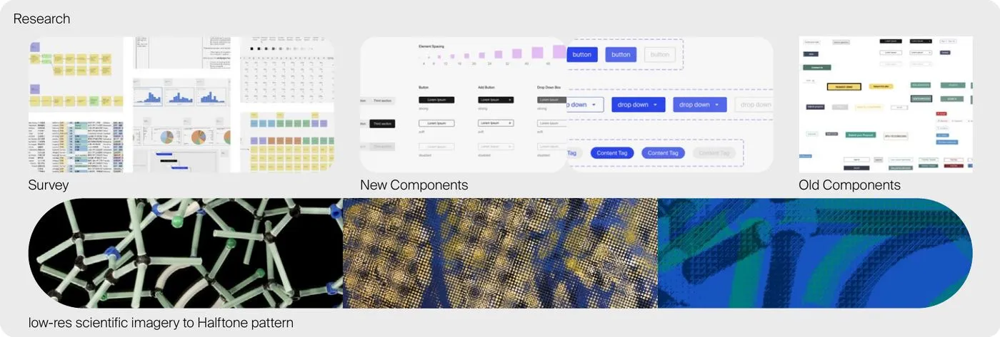
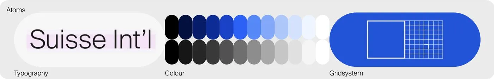

Context
During the pandemic, MDPI approached me about its brand while I was running my own freelance practice in Amsterdam.
I worked closely with MDPI’s Graphic Design team (print and video), Marketing and Front-End to build one visual and design system across print and digital platforms.
Problem
Eight initiatives, eight looks, and no shared style guide.
MDPI has existed since 1995 and operates in 17 locations. It had no shared UI components, visual language, colour system or type hierarchy. Each initiative had built its own look, so the brand felt fragmented across print, digital and dozens of publications.

Research
The core material was scientific imagery, often at very low resolution and unusable at scale. I experimented with it until I found a pattern: rendered as halftone, low-res technical imagery became a deliberate texture instead of a limitation, and it worked the same in print and on screen.
I tested the direction with colour surveys across more than 80 users for legibility and preference, alongside logo abstraction studies, typography readability tests and accessibility testing.

Key decisions
Turn the weakest asset into the signature
Low-res imagery was the problem every team had. Making halftone the visual signature solved it once for everyone, in print and on screen.
Foundations and tokens before components
Typography, iconography, colour and grid came first, backed by tokens, so colour and type stayed consistent as more components were added over the years.
One master template for every special request
Each initiative’s variation fed back into the same master, so exceptions strengthened the system instead of fragmenting it.
Adoption through conversation, not enforcement
Some regional teams kept producing their own materials. I kept talking with them until the system was useful to them, not imposed on them.
Solution
I built the master system in Figma from the foundations up, then layered component sets with the halftone effect on top. With the Front-End team, it became an extendable base other initiatives could build on without breaking it. MDPI Books, Scilit and JAMS adopted it in the first year, starting in print and later in digital products including SciProfile.

Impact
All eight initiatives now share one system, and new initiatives start on it from day one.
The first six months were the hardest. One regional team, based in China, kept working independently. Within a year, that same team said a shared system made communication across MDPI’s global initiatives easier. Marketing and leadership described the result as calmer and more structured, and teams gained a clearer sense of what they were building toward.
Reflection
I’d bring the regional teams in earlier and co-create the first components with them. Most of the resistance in the first six months came from people seeing the system only after it was finished.